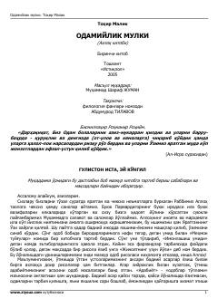

OMInson axloqi, qalb pokligi va ma'naviy tarbiyaga bag'ishlangan risola.
Mazkur kitob atoqli adib Tohir Malik tomonidan yozilgan bo'lib, inson axloqi, qalb pokligi va ma'naviy tarbiyaga bag'ishlangan. Asarda Qur'oni Karim oyatlari, hadislar va allomalarning hikmatlari asosida jamiyatdagi odob-axloq masalalari tahlil qilinadi. Kitobxonni o'z-o'zini tarbiyalashga va yaxshilik sari intilishga undaydi.